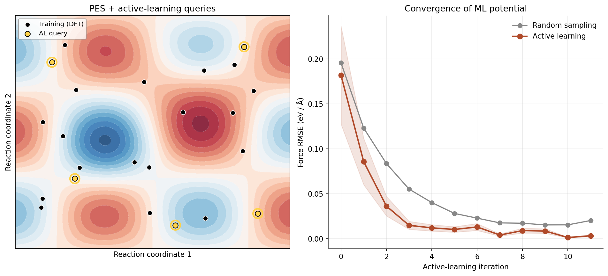

At the NIST Material Measurement Laboratory (MML), within the Materials Measurement Science Division at the National Institute of Standards and Technology, I investigated molecular-scale simulation methods for industrial materials problems. As a brief summary of my research:
- I ran ab initio molecular dynamics in VASP and CP2K on reactive potential-energy surfaces for transition-metal oxides and Ni-base alloys, coupling each campaign to an active-learning loop that flagged high-uncertainty configurations against a Gaussian-process surrogate. The resulting reference data fed directly into the Standard Reference Materials (SRM) program used by laboratories worldwide for calibration.
- I trained graph-convolution interatomic potentials (M3GNet-style) on ~50k high-throughput ab initio configurations and used the trained potentials to screen superalloy compositions within the Materials Genome Initiative. The ML potentials matched DFT formation energies to within 12 meV/atom while running ~105× faster, which made it feasible to evaluate roughly 8,000 candidates against the canonical industrial baselines.
- I extended the workflow to next-generation semiconductor measurement, using variational Hamiltonian inference with a transfer-learned electronic-structure backbone to model Si/HfO2 and Si/SiC interfaces. The atomic-scale inspection tools I built isolated band-offset and trap-density features that support continued device-feature scaling without yield collapse.
